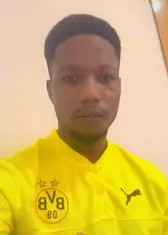

Bernard Yaw Adjei | WDD 130
Hello! My name is Bernard Yaw Adjei, and I come from the vibrant Volta Region of Ghana. I have always been fascinated by technology and the transformative impact it can have on people's lives. This passion has led me to pursue web development, and I am thrilled to be taking the WDD 130 course. Through this class, I hope to deepen my skills in coding and design, allowing me to create meaningful and impactful projects. I view this journey as an exciting opportunity to expand my knowledge and embrace the challenges that come with mastering web technologies. In addition to my love for technology, I have a strong passion for soccer, a sport that teaches teamwork, strategy, and perseverance—qualities I bring to every aspect of my life. I enjoy exploring creative projects that push me to think innovatively and apply fresh perspectives. My goal is to combine my enthusiasm for sports and technology to develop solutions that inspire and connect people. I look forward to growing both personally and professionally as I embark on this exciting path in web development!